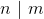
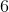
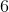
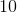
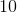
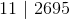
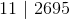
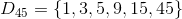

Divizibilitatea numerelor naturale
Noțiunea de divizor; noțiunea de multiplu
Definiția NN27: Număr divizibil; divizor, multiplu; divizor propriu
- Spunem că un număr natural
 este divizibil sau se divide cu un număr natural nenul
este divizibil sau se divide cu un număr natural nenul  dacă există un număr natural
dacă există un număr natural  astfel încât
astfel încât  .
. - Numărul se numește divizor a lui , iar se numește multiplu al lui .
- Dacă numărul natural se împarte exact la numărul natural nenul , atunci spunem că este divizibil cu .
- Orice divizor al unui număr natural , diferit de
 sau de numărul , se numește divizor propriu al lui .
sau de numărul , se numește divizor propriu al lui .
Putem nota:
 - citim este divizibil cu ;
- citim este divizibil cu ;-  - divide pe .
Mulțimea divizorilor unui număr natural se notează cu  și este finită.
și este finită.
Mulțimea multiplilor unui număr natural se notează cu  și este infinită.
și este infinită.
Exemple:
 este divizibil cu
este divizibil cu  , deoarece există  astfel încât
, deoarece există  astfel încât  .
.
Deci, este divizor al lui , iar este multiplu al lui .
se numește divizor propriu.
Notăm  și citim „ se divide cu ” sau
și citim „ se divide cu ” sau  și citim „ divide pe ”.
și citim „ divide pe ”.
 este divizibil cu , deoarece există
este divizibil cu , deoarece există  astfel încât
astfel încât  .
.
Așadar, este divizor al lui , iar este multiplul lui .
se numește divizor propriu.
Notăm  și citim „ se divide cu ” sau
și citim „ se divide cu ” sau  și citim „ divide pe ”.
și citim „ divide pe ”.
- este divizibil cu
 , deoarece există
, deoarece există  astfel încât
astfel încât  .
.
Astfel, avem că este divizor al lui , iar este multiplul lui .
se numește divizor propriu.
Notăm  și citim „ se divide cu ” sau  și citim „ divide pe ”.
și citim „ se divide cu ” sau  și citim „ divide pe ”.
- Mulțimea divizorilor lui
 se notează cu
se notează cu  , unde
, unde  .
.
Toate numerele până la inclusiv, care, dacă împărțim la acestea, împărțirea este fără rest, formează mulțimea divizorilor lui .
Pentru a verifica dacă am scris toți divizorii, grupăm divizorii câte doi, pornind de la margini către interior. Produsul lor trebuie sa fie .

Mulțimea multiplilor lui se notează cu  , unde
, unde  .
.
Mulțimea multiplilor lui se obține pornind de la  , la care se adună , apoi se adună iar și tot așa.
, la care se adună , apoi se adună iar și tot așa.
- Mulțimea divizorilor lui
 conține toate numerele la care se împarte exact.
conține toate numerele la care se împarte exact.
Notăm .
Pentru a verifica dacă am scris toți divizorii, grupăm divizorii câte doi pornind de la margini către interior. Produsul lor trebuie sa fie .

Mulțimea multiplilor lui este formată cu elementele  etc.
etc.
Notăm  .
.